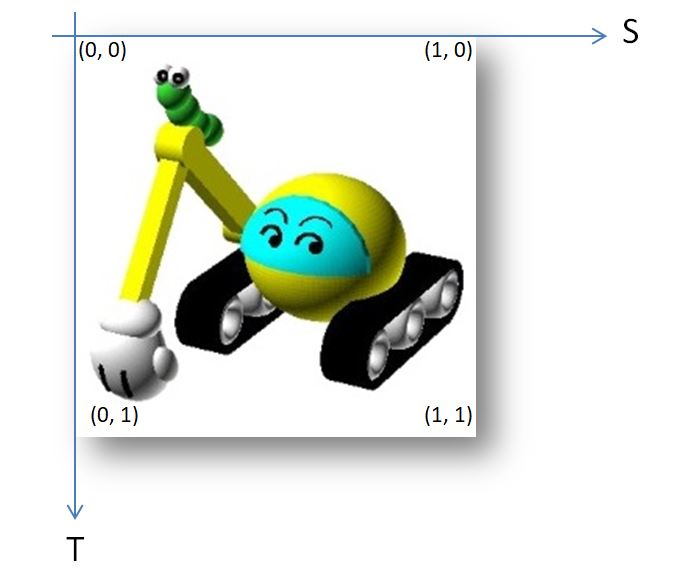
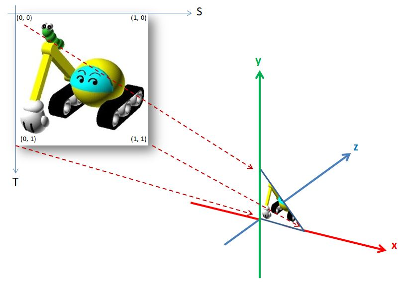
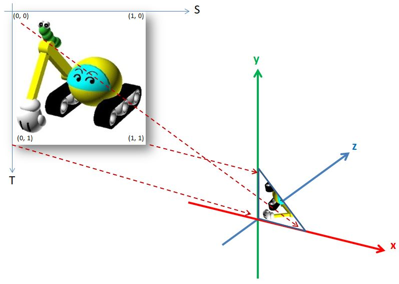
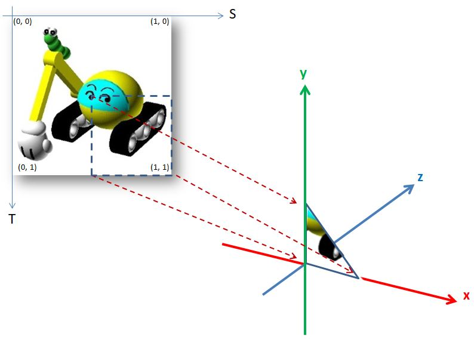

片段著色器可以為每個像素上色，如果是想要創造純色、漸層色或一些效果，可以藉由演算上的設計來達到，然而，如果想要讓模型有石頭的質感，擬真的方式是拍下石頭的表面，把照片貼到模型吧！
WebGL 可以使用貼圖（Texture）作為像素上色的依據，在實際撰寫程式之前，要先來認識貼圖座標（Texture coordinates），貼圖來源基本上是張圖片（具體來說，是一組像素資料，因此也可以是位元組集合，或者是 Canvas 2D 畫出來的圖），WebGL 的貼圖座標值為 0 ~ 1，然而，WebGL 慣例上不使用 X、Y 來表示，而使用 S、T，S 相當於 X，向右為正，T 相當於 Y，向下為正：

如果要將圖片貼到模型上，必須指定把哪個貼圖座標對應到哪個頂點，例如，將圖片貼到三角形：

這麼一來，為三角形每個像素上色時，會依貼圖座標從貼圖上採樣顏色資訊，以上圖為例，最後的結果就是繪製出挖土機的左下三角形，別忘了，WebGL 中最多就是三角形，如果想要繪製出完整的圖片，就要有兩個三角形。
貼圖座標與頂點的對應關係，決定了貼圖上哪個部份要繪製到模型上，例如，若是這麼對應：

那麼挖土機左下三角形被畫出來時就會是翻轉過來的樣子，也可以使用貼圖座標來選擇圖片中的部份區域：

這麼一來，畫出來的圖就會只有挖土機的右下部份。只要知道這些，基本上要處理材質就不會是難事了，這在下篇文件中再來談了！